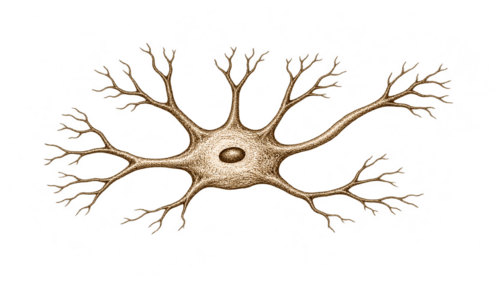

Forward prediction
Inputs pass through weighted connections and activation functions to produce prediction.

Choose data. Train a network. Watch its predictions change.
Train two architectures side by side
Lower loss means model predictions fit selected data more closely.
Accuracy applies to classification datasets.
Inputs pass through weighted connections and activation functions to produce prediction.
Binary cross-entropy compares prediction with class label. Lower values mean smaller error.
Optimizer adjusts weights using loss gradient. Repeating this process changes model's predictions.